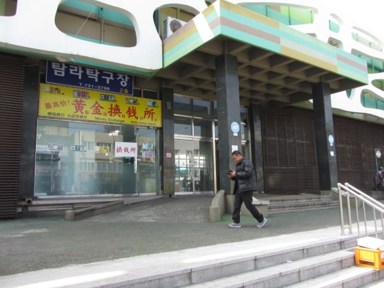

我們在早上九時四十一分抵達濟州市神祕道路附近的美術館, 立即走往神祕道路, 沒什麼好看, 早上九時五十七分便遊覽完畢, 接著匆匆走回剛才下車的巴士站, 準備搭乘早上十時班次的70號巴士離開。當離巴士站還有三十多尺時, 看見一輛70號巴士剛剛起動, 正在駛往馬路之際, 一邊奔跑, 一邊不斷的向巴士揮手, 幸好車長看見我們, 將巴士停在路口等我們, 韓國巴士車長真是很熱情的。
濟州長途巴士站(시외버스터미널)
和來的時候一樣, 路線同樣迂迴曲折, 先往機場行一個大運, 接著在市區內拐了一大圈, 約早上十時抵達濟州長途巴士站(시외버스터미널)。我們便是從這裡展開濟州市一天散步之旅。
濟州市一天散步之旅路線
我們出發前並沒有詳細計劃濟州市的步行路線, 只是四處隨意閒逛, 以下是我們最終的步行路線:
濟州長途巴士站 → 典農路 西出入口 → 典農路 東出入口 → 三姓穴 →
麵條文化街 → 新山公園 → 濟州城址 → 東門自由市場 → 山地川 →
濟州港旅客碼頭 → 濟州東門市場 → 山地川廣場 → 七星路購物街 →
黑豬肉一條街纱 → 羅峯公園 → 濟州市中央地下商店街
下了巴士, 巴士站旁有一間銀行。因我們第一天在中文區只用八百美元兌換了約八十八萬韓元, 不足應付整個行程, 還需要兌換更多韓元, 所以便進入銀行問問匯率, 記得大約是一美元兌1093韓元。感覺匯率並不好, 便沒有兌換。
走出銀行, 濟州長途巴士站就在馬路對面。
看見濟州長途巴士站有一間換錢所, 號稱最高價, 便走去問問, 原來剛剛相反! 相信都是方便旅行團, 不用四處找換錢所, 也不可能好像我們那樣四處比較匯率。

接著返回剛才下車的巴士站, 開始第一段步行路線: 步行往典農路 (전농로 Jeonnong-ro)西面的入口。典農路是濟州市的賞櫻勝地, 只可惜今年濟州島天氣反常, 櫻花遲遲還未開花, 所以沒有抱什麼期望。
屏門川 (병문천)．吾羅橋 (오라교)
沿馬路走。走過橫躺屏門川 (병문천)兩岸的吾羅橋。
走過吾羅橋後, 在橋頭的街口轉左沿屏門川畔的馬路走。起初一段的馬路兩旁都停滿了汽車, 只好在馬路中心走。
一直向前走。
經過第2號兒童公園 (제2호어린이공원), 便來到濟州中央小學 (제주중앙초교)。
繼續向前走, 沿途兩旁都是櫻花樹, 樹枝上大部份花蕾已經長大, 轉為粉紅色, 含苞待放, 看清楚, 有些已經開了花, 情況比想像中的好很多, 起碼不是好像在鹿山路和表善所看到光禿禿那般。
哈哈~~~ 前面有一株已經開花的櫻樹! 終於在濟州島第一次看到櫻花, 真想不到, 在離開濟州島前一天才看到櫻花。
典農路 (전농로 Jeonnong-ro)西面入口
再向前走一會, 便來到典農路西面的入口, 接著我們會沿典農路走到另一邊的出口, 也就是把整條典農路走一遍。

{kind=link}